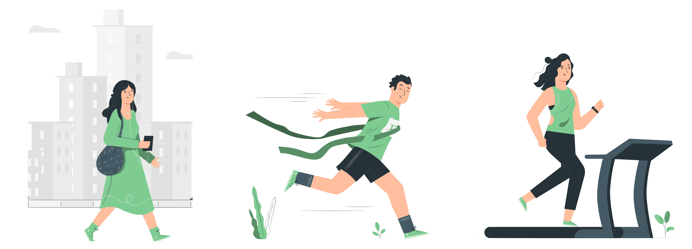

You are not logged in!
Loading...
Welcome to Tucan Fitness! When your race starts, you will have access to a digital race where you can strive to win, interact with other racers, and visualize yours and others progress on a virtual map. We integrate with Strava to allow easy access to your fitness activities.
Until race day begins and you have access to the race on your profile, you can sit back and relax (or train like crazy). We recommend that you use this time to do the action items below to best prep for race day.
Let other people in your race know who you are!
Find out more about our platform and business
Import your fitness activities from your favorite fitness app! If you don’t have Strava already, download it onto your phone from the app store, and make an account on your phone. Once you have an account, press the button below to connect it to our platform. This will allow your Strava activities to show up into the race. Only activities recorded after race start will be counted towards your race. Before race day, if you aren’t familiar with Strava, make sure you know how to record your activities on your phone.